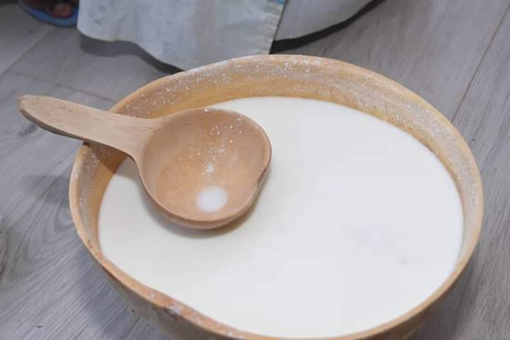
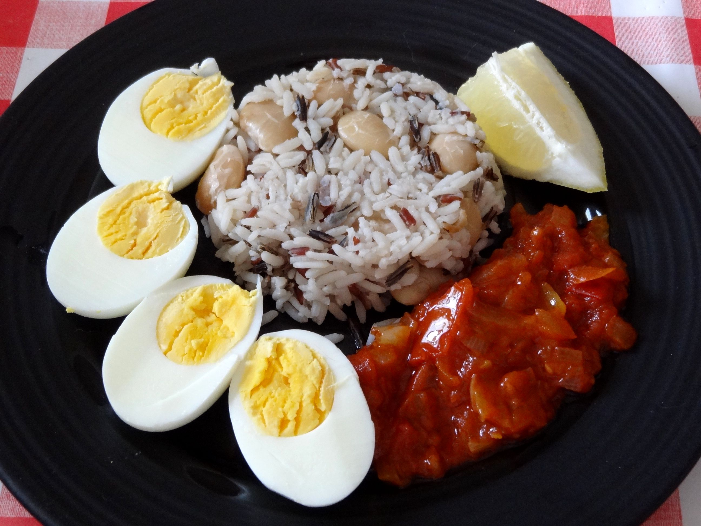
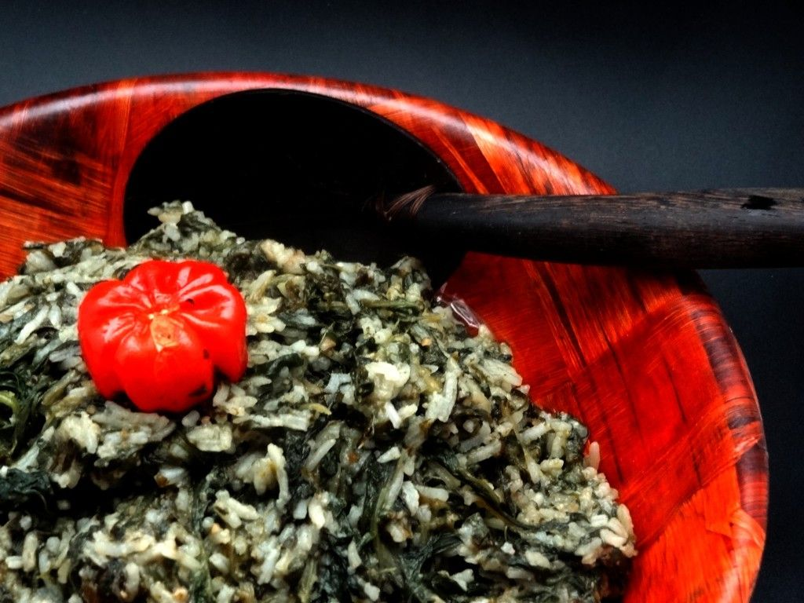

Faso Ri Nondo
Accueil
Les recettes
Soumettre une recette
LES METS DE LA REGION DU NORD

X
Nom :Gapal
Recette :
1 kg de grains entiers de mil
500 g de lait en poudre
250 g de sucre blond
3 sachets de sucre vanille
1 petit pot de ferment (pot de yaourt)

X
Nom :Baigga(haricot)
Recette :
1 kg de haricot local cru
1 petite portion de potasse
1 cuillérée à soupe de sel iodé
2 tomates fraîches
3 bulbes d’oignons crus
1/4 litre d’huile

X
Nom :Babendda
Recette :
500 g de riz blanc cru
6 assiette es de feuilles fraîches d’amarante (burum-burum)
3 assiette es de feuilles fraîches d’oseilles
3 assiette es de feuilles fraîches de cle ome (Kienebdo)
1/4de kg viande crue
1/2bol de graines d’arachide crues
3 piments frais crus
1/4 litre d’huile
1/2 cuille re e a cafe de sel iodé
2 bulbes d’oignon frais